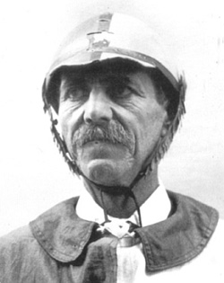

|
(Ansanello) 2/17 - detto anche Sansone - Nato a Murlo (SI) il 20 maggio 1858 (vedi battesimo) Morto a Siena il 12 settembre 1911 (vedi morte) Emigrato da Murlo a Siena il 2 marzo 1899 
1 Palio straordinario.   Per Ansanello particolarmente burrascoso fu il dopo Palio dell'agosto 1896 per un episodio che gli costò anni di squalifica. Vestiva il giubbetto della Torre e, primo al secondo giro al Casato, come ci racconta il Luchini, si fermò improvvisamente per far passare la rivale Oca: scese da cavallo e si consegnò nelle mani dei gendarmi. In seguito, nel tentativo di sfuggire alle giuste ire dei torraioli, grazie anche all'aiuto dei brucaioli che avevano vinto il Palio, riuscì a raggiungere il convento dell'Osservanza, dove chiese e ricevette ospitalità per la notte e da dove il giorno dopo partì per tornare a casa.  Stato delle Anime di Murlo, anno 1874  Matrimonio celebrato a Murlo il 28 settembre 1882 con Emilia Cavicchioli Uno dei testimoni era Carlo Brandani detto Brutto
 leva militare | ||||||||||||||||||||||||||||||||||||||||||||||||||||||||||||||||||||||||||||